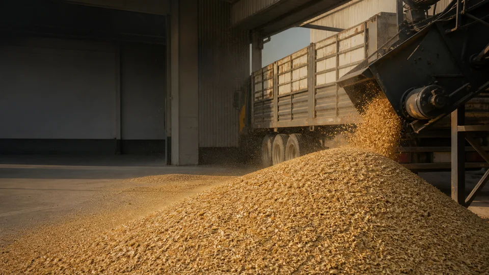

Feed Raw Materials
Feed-production inputs and related materials in commercial quantities.
Al Nesour Feeds operates in the B2B supply market for feed raw materials and finished feed, serving traders, feed factories, and large farms.
We help customers organise supply enquiries from product and commercial quantity through sourcing, availability, transportation, and delivery coordination.
The website is not an online store and does not publish fixed prices. Each request begins with a commercial conversation based on product, quantity, and destination.
Our scope includes feed raw materials, finished feed, wholesale, and commercial quantities according to order requirements and availability.
Feed-production inputs and related materials in commercial quantities.
Supply according to customer requirements and available product ranges.
Each audience has different needs in quantity, frequency, and delivery.
Commercial supply and flexibility in product and quantity enquiries.
Production inputs and recurring operational requirements.
Feed and raw-material needs with delivery-location coordination.
We begin with product, quantity, and delivery location, then review availability, structure the quotation, and coordinate logistics. This does not imply automated availability or a fixed timeline before confirmation.
View Our ServicesOur capabilities include direct supply from relevant factories and sources, as well as import and export activity within the wider supply process.

Practical values describing how we work, without implying awards or certifications.
Following requirements with clarity.
Organising supply relationships for continuity.
Reviewing products against agreed order needs.
Separating confirmed facts from items needing review.
Supporting recurring requirements with suitable arrangements.
Approaching customers as long-term business relationships.
Share the product, quantity, and delivery location to begin the quotation process.
Request a Quote